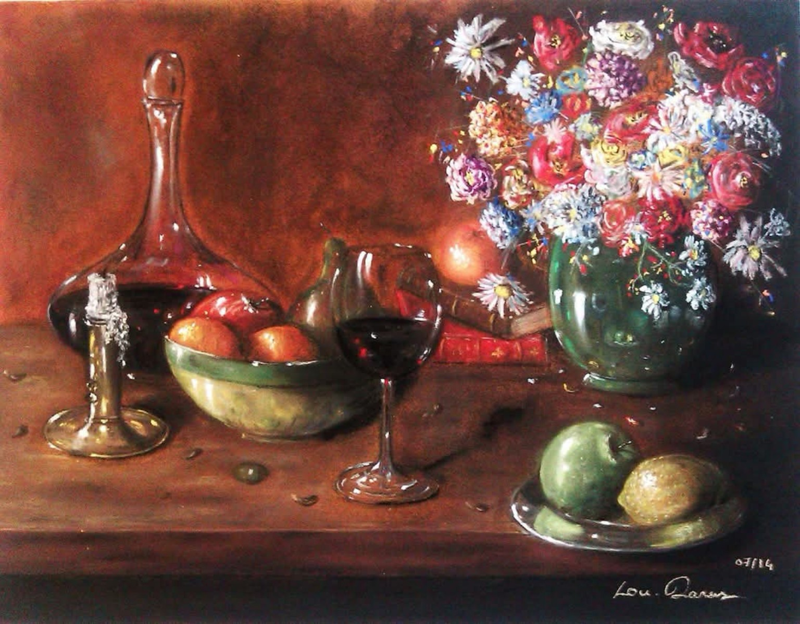

Nature morte
Le petit déjeuner
Le Petit Déjeuner est un condensé de mes études des différentes matières. Le vin, le verre, le métal, le bois, le cuir, les fruits et les fleurs. Tout trouve une ombre et un reflet, tandis que le clair-obscur révèle la présence des objets sans chercher à raconter davantage.
Demander des informations →← Retour à la galerie